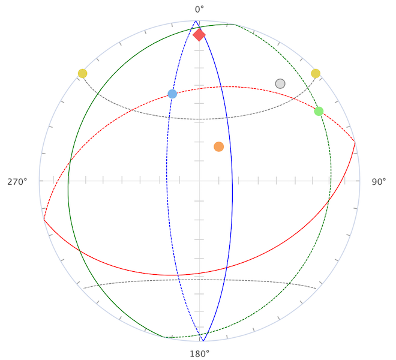
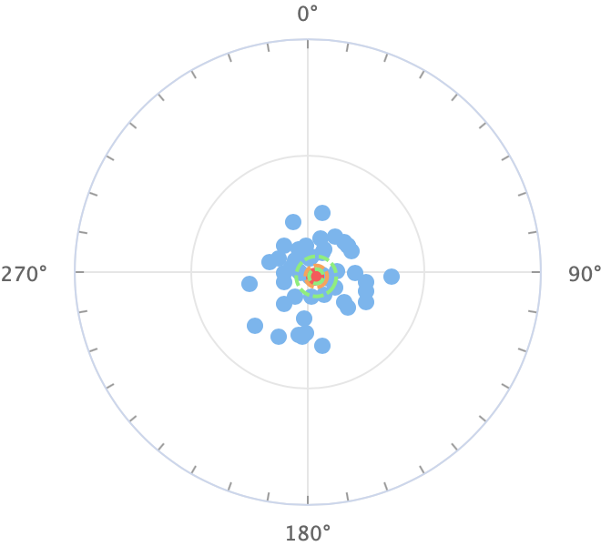
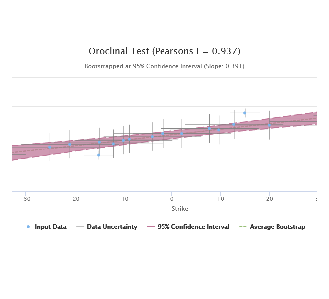
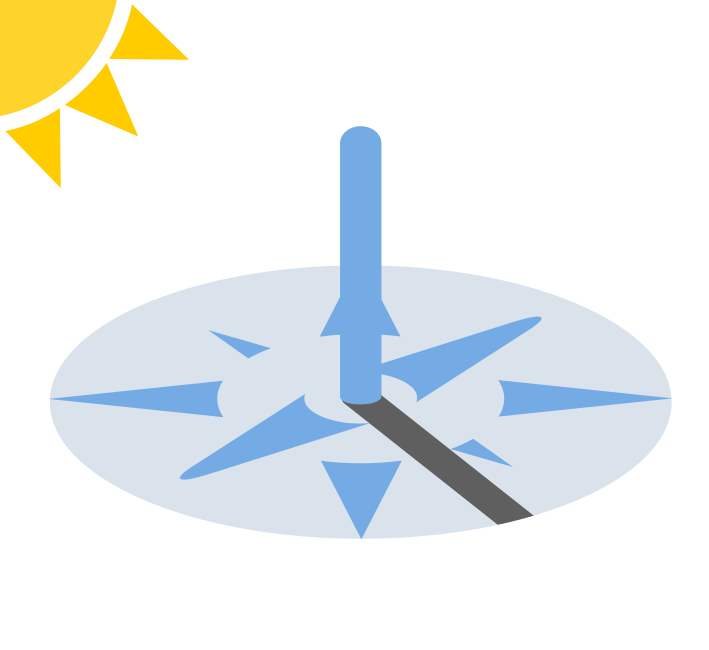

A toolbox with miscellaneous webapps that do not fit within one of the portals..

This tool can restore the orientation of dyke with a geomagnetic reference to its original vertical position.

This tool can be used to parametrically sample a Fisherian distribution of poles or directions and generate declination-inclination pairs.
This tool can be used to convert between magnetic directions and virtual geomagnetic poles at site locations following the GAD model.

Implementation of a bootstrapped Oroclinal Test using a TLS regression between bedding strike and magnetic declination.
